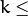

K-Nearest Neighbors¶
The algorithm caches all training samples and predicts the response for a new sample by analyzing a certain number (K) of the nearest neighbors of the sample using voting, calculating weighted sum, and so on. The method is sometimes referred to as “learning by example” because for prediction it looks for the feature vector with a known response that is closest to the given vector.
CvKNearest¶
-
class
CvKNearest: publicCvStatModel¶
The class implements K-Nearest Neighbors model as described in the beginning of this section.
Note
- (Python) An example of digit recognition using KNearest can be found at opencv_source/samples/python2/digits.py
- (Python) An example of grid search digit recognition using KNearest can be found at opencv_source/samples/python2/digits_adjust.py
- (Python) An example of video digit recognition using KNearest can be found at opencv_source/samples/python2/digits_video.py
CvKNearest::CvKNearest¶
Default and training constructors.
-
C++:
CvKNearest::CvKNearest()¶
-
C++:
CvKNearest::CvKNearest(const Mat& trainData, const Mat& responses, const Mat& sampleIdx=Mat(), bool isRegression=false, int max_k=32 )¶
-
C++:
CvKNearest::CvKNearest(const CvMat* trainData, const CvMat* responses, const CvMat* sampleIdx=0, bool isRegression=false, int max_k=32 )¶
See CvKNearest::train() for additional parameters descriptions.
CvKNearest::train¶
Trains the model.
-
C++:
CvKNearest::train(const Mat& trainData, const Mat& responses, const Mat& sampleIdx=Mat(), bool isRegression=false, int maxK=32, bool updateBase=false )¶
-
C++:
CvKNearest::train(const CvMat* trainData, const CvMat* responses, const CvMat* sampleIdx=0, bool is_regression=false, int maxK=32, bool updateBase=false )¶
-
Python:
cv2.KNearest.train(trainData, responses[, sampleIdx[, isRegression[, maxK[, updateBase]]]]) → retval¶ Parameters: - isRegression – Type of the problem:
truefor regression andfalsefor classification. - maxK – Number of maximum neighbors that may be passed to the method
CvKNearest::find_nearest(). - updateBase – Specifies whether the model is trained from scratch (
update_base=false), or it is updated using the new training data (update_base=true). In the latter case, the parametermaxKmust not be larger than the original value.
- isRegression – Type of the problem:
The method trains the K-Nearest model. It follows the conventions of the generic CvStatModel::train() approach with the following limitations:
- Only
CV_ROW_SAMPLEdata layout is supported. - Input variables are all ordered.
- Output variables can be either categorical (
is_regression=false) or ordered (is_regression=true). - Variable subsets (
var_idx) and missing measurements are not supported.
CvKNearest::find_nearest¶
Finds the neighbors and predicts responses for input vectors.
-
C++:
CvKNearest::find_nearest(const Mat& samples, int k, Mat* results=0, const float** neighbors=0, Mat* neighborResponses=0, Mat* dist=0 )const¶
-
C++:
CvKNearest::find_nearest(const Mat& samples, int k, Mat& results, Mat& neighborResponses, Mat& dists)const¶
-
C++:
CvKNearest::find_nearest(const CvMat* samples, int k, CvMat* results=0, const float** neighbors=0, CvMat* neighborResponses=0, CvMat* dist=0 )const¶
-
Python:
cv2.KNearest.find_nearest(samples, k[, results[, neighborResponses[, dists]]]) → retval, results, neighborResponses, dists¶ Parameters: - samples – Input samples stored by rows. It is a single-precision floating-point matrix of
 size.
size. - k – Number of used nearest neighbors. It must satisfy constraint: 
CvKNearest::get_max_k(). - results – Vector with results of prediction (regression or classification) for each input sample. It is a single-precision floating-point vector with
number_of_sampleselements. - neighbors – Optional output pointers to the neighbor vectors themselves. It is an array of
k*samples->rowspointers. - neighborResponses – Optional output values for corresponding
neighbors. It is a single-precision floating-point matrix of size. - dist – Optional output distances from the input vectors to the corresponding
neighbors. It is a single-precision floating-point matrix of size.
- samples – Input samples stored by rows. It is a single-precision floating-point matrix of
For each input vector (a row of the matrix samples), the method finds the k nearest neighbors. In case of regression, the predicted result is a mean value of the particular vector’s neighbor responses. In case of classification, the class is determined by voting.
For each input vector, the neighbors are sorted by their distances to the vector.
In case of C++ interface you can use output pointers to empty matrices and the function will allocate memory itself.
If only a single input vector is passed, all output matrices are optional and the predicted value is returned by the method.
The function is parallelized with the TBB library.
CvKNearest::get_max_k¶
Returns the number of maximum neighbors that may be passed to the method CvKNearest::find_nearest().
-
C++:
CvKNearest::get_max_k()const¶
CvKNearest::get_var_count¶
Returns the number of used features (variables count).
-
C++:
CvKNearest::get_var_count()const¶
CvKNearest::get_sample_count¶
Returns the total number of train samples.
-
C++:
CvKNearest::get_sample_count()const¶
CvKNearest::is_regression¶
Returns type of the problem: true for regression and false for classification.
-
C++:
CvKNearest::is_regression()const¶
The sample below (currently using the obsolete CvMat structures) demonstrates the use of the k-nearest classifier for 2D point classification:
#include "ml.h"
#include "highgui.h"
int main( int argc, char** argv )
{
const int K = 10;
int i, j, k, accuracy;
float response;
int train_sample_count = 100;
CvRNG rng_state = cvRNG(-1);
CvMat* trainData = cvCreateMat( train_sample_count, 2, CV_32FC1 );
CvMat* trainClasses = cvCreateMat( train_sample_count, 1, CV_32FC1 );
IplImage* img = cvCreateImage( cvSize( 500, 500 ), 8, 3 );
float _sample[2];
CvMat sample = cvMat( 1, 2, CV_32FC1, _sample );
cvZero( img );
CvMat trainData1, trainData2, trainClasses1, trainClasses2;
// form the training samples
cvGetRows( trainData, &trainData1, 0, train_sample_count/2 );
cvRandArr( &rng_state, &trainData1, CV_RAND_NORMAL, cvScalar(200,200), cvScalar(50,50) );
cvGetRows( trainData, &trainData2, train_sample_count/2, train_sample_count );
cvRandArr( &rng_state, &trainData2, CV_RAND_NORMAL, cvScalar(300,300), cvScalar(50,50) );
cvGetRows( trainClasses, &trainClasses1, 0, train_sample_count/2 );
cvSet( &trainClasses1, cvScalar(1) );
cvGetRows( trainClasses, &trainClasses2, train_sample_count/2, train_sample_count );
cvSet( &trainClasses2, cvScalar(2) );
// learn classifier
CvKNearest knn( trainData, trainClasses, 0, false, K );
CvMat* nearests = cvCreateMat( 1, K, CV_32FC1);
for( i = 0; i < img->height; i++ )
{
for( j = 0; j < img->width; j++ )
{
sample.data.fl[0] = (float)j;
sample.data.fl[1] = (float)i;
// estimate the response and get the neighbors' labels
response = knn.find_nearest(&sample,K,0,0,nearests,0);
// compute the number of neighbors representing the majority
for( k = 0, accuracy = 0; k < K; k++ )
{
if( nearests->data.fl[k] == response)
accuracy++;
}
// highlight the pixel depending on the accuracy (or confidence)
cvSet2D( img, i, j, response == 1 ?
(accuracy > 5 ? CV_RGB(180,0,0) : CV_RGB(180,120,0)) :
(accuracy > 5 ? CV_RGB(0,180,0) : CV_RGB(120,120,0)) );
}
}
// display the original training samples
for( i = 0; i < train_sample_count/2; i++ )
{
CvPoint pt;
pt.x = cvRound(trainData1.data.fl[i*2]);
pt.y = cvRound(trainData1.data.fl[i*2+1]);
cvCircle( img, pt, 2, CV_RGB(255,0,0), CV_FILLED );
pt.x = cvRound(trainData2.data.fl[i*2]);
pt.y = cvRound(trainData2.data.fl[i*2+1]);
cvCircle( img, pt, 2, CV_RGB(0,255,0), CV_FILLED );
}
cvNamedWindow( "classifier result", 1 );
cvShowImage( "classifier result", img );
cvWaitKey(0);
cvReleaseMat( &trainClasses );
cvReleaseMat( &trainData );
return 0;
}
Help and Feedback
You did not find what you were looking for?- Ask a question on the Q&A forum.
- If you think something is missing or wrong in the documentation, please file a bug report.